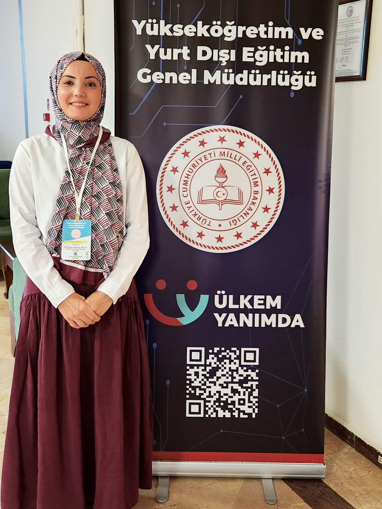

Türkçenin Renkli Dünyasına
Eğlenceli Bir Yolculuk!
Dünyayı dolaşan Türkçe kelimeler, ödüllü dedektif oyunları ve neşeli sürprizlerle dolu bayram atölyemize sen de davetlisin!

Türkçemizi Birlikte Kutluyoruz!
Yurt dışında yaşayan çocuklarımız ve gençlerimiz için hazırlanan bu özel buluşmada; Elif Ertekin Öğretmenimizin eşliğinde yarışma stresinden uzak, bol kahkahalı, sıfır dil eşiğiyle herkesin rahatça parmak kaldırıp katılabileceği interaktif bir bayram ortamı sizleri bekliyor.
Atölyede Bizi Neler Bekliyor?
Sıkıcı dersler yok! Ekrana dokunarak, çizerek ve doğrudan etkinlik bağlantılarına katılarak Türkçeyi keşfedeceğiz.
Türkçe Neye Benziyor?
Türkçe deyince aklına hangi renk, emoji ya da şekil geliyor? Beyaz tahtaya özgürce çiziyor, boyuyoruz!
Türkçeden Dünyaya
Yoğurt, kahve, baklava ve cacık nasıl dünya turuna çıktı? Farklı dillerdeki Türkçe kelimeleri dedektif gibi buluyoruz.
Türkçesi Varken!
Selfie mi özçekim mi? Link mi bağlantı mı? Günlük hayatımıza giren kelimelerin havalı Türkçe karşılıklarını oyluyoruz.
Türkçe Benim İçin...
"Annemin sesi", "bir köprü", "bir lezzet"... Ortak dijital duvarımıza izimizi bırakıp tebrik kartımızı alıyoruz.
İnteraktif Oyun & Katılım Masası
Atölye boyunca eğitmenimizle eş zamanlı katılacağımız oyunlar, canlı oylamalar ve hatıra köşesi bağlantıları burada!
Türkçeden Dünyaya
Farklı dillerde yaşayan Türkçe kelimeleri dedektif gibi eşleştir, puanları topla!
Türkçesi Hangisi?
Yabancı kelimelerin en güzel Türkçe karşılıklarını Mentimeter üzerinde canlı oyla!
Hazine Avı
Dilimizin gizli hazinelerini ve eğlenceli sözcük ipuçlarını çözerek sandığı aç!
Türkçe Bir ...
Cümleyi kendi duygularınla tamamla; ortak ekranda rengarenk bir kelime bulutu oluşturalım.
Bana Göre Türkçe
"Annemin sesi", "bir masal"... Dijital panomuza kendi cümleni veya çizimini yapıştır!
Tebrik Kartı & Rozet
Dil Bayramı anısına özel hazırlanan dijital tebrik kartını aç ve hatıranı sakla!
Bu Kelimeler Dünyayı Nasıl Gezdi?
Kelimelere tıkla, Türkçeden yabancı dillere geçen sürpriz yolculukları gör!
Öz Türkçe "yoğurmak" fiilinden türemiştir. Dünyanın neredeyse tüm dillerinde yoğurt kelimesi doğrudan Türkçeden alınmıştır!
Katılmadan Önce Küçük Bir Hatırlatma
Veliler ve çocuklarımız için pratik ipuçları
- • Anonim/Misafir Girişi Açık: Microsoft hesabınız olmasa bile bağlantıya tıklayıp adınızı yazarak doğrudan katılabilirsiniz.
- • Cihaz Seçimi: Ekran çizimleri ve eğlenceli oylamalar için tablet ya da bilgisayar katılımı önerilir, ancak telefon da yeterlidir.
- • Yurt Dışındaki Çocuklar: Türkçe seviyesi başlangıç düzeyinde olan miniklerimiz dilediğinde emoji ve renklerle atölyeye kolayca ortak olabilir.
26 Eylül Cumartesi Akşamı Ekran Başında Buluşalım!
Kameranızı açın, reaksiyonlarınızı hazırlayın; bayramımızı dünya çocuklarıyla birlikte neşeyle kutlayalım.